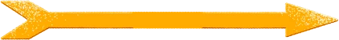
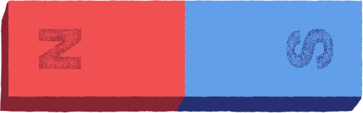
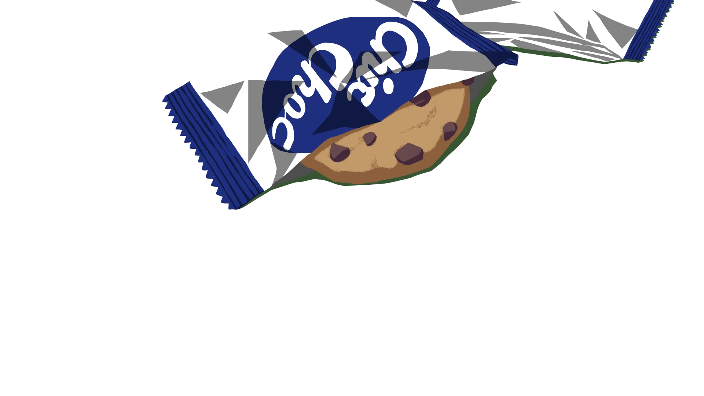
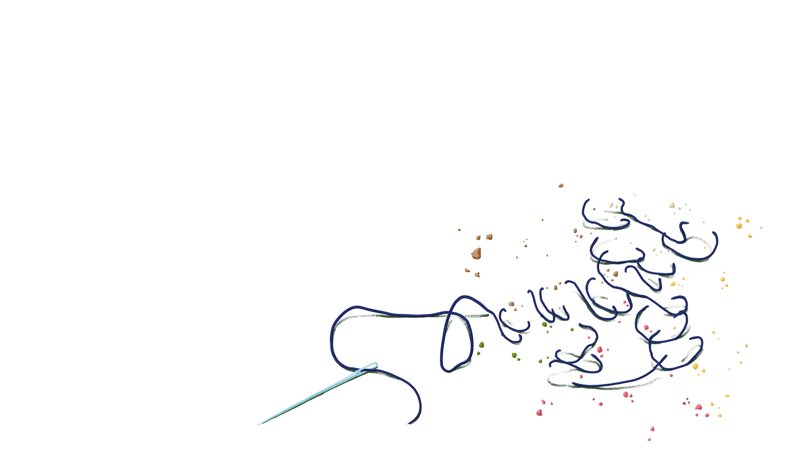
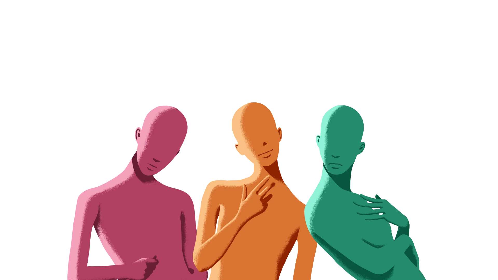
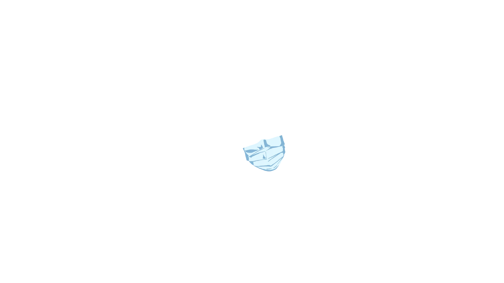
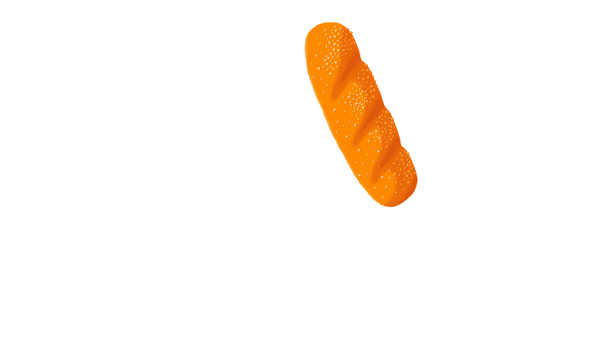
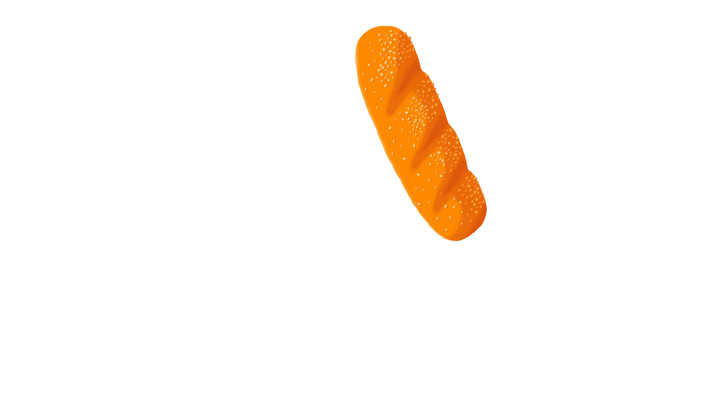

‘아무거나’는 과거 미국에서 가장 짜증나는 말로
선정될 정도로 거의 모든 사람들이 싫어하는 말이다.
실제로 나는 ‘아무거나’라는 대답으로
주변인들에게 곤란한 표정을 짓게 했다.
몇 번의 경험과 실패를 통해 그런 식의 대답은
피하는 게 좋다는 것을 알고 있다.
“핸드폰 케이스는 어떤 색으로 하시겠어요?”
세상에, 핸드폰을 바꾸려다 일생일대의 고민을 해야 했다.
“랜덤적용”
처음으로 3D 그래픽의 게임을 시작할 때는 설레었다.
2D 그래픽 게임에 비해 구경할 것도 많고
적당히 돌아다니는 것도 즐거울 것 같았다.
다른 사람들이 올린 스크린샷만 보고 간과한 것이 있다.
차원이 한 단계 높아진다는 것은
곧 내가 바꿀 수 있는 설정도 더 많아진다는 것이다.
어차피 꾸밀 수 있는 거 초기 모습과는 다르게 하고 싶은데
어떻게 바꾸어야 할지 모르겠다.
캐릭터 하나 만드는데 무슨 설정이 그렇게 많은지!
그때, 날 위해 반짝이는 버튼이 하나 있었다.
너만 믿을게!


“글쎄”
초등학생 때부터 학기 첫날에 하던 설문조사에는
늘 장래희망을 적는 칸이 있다.
이따 먹을 점심 메뉴가 더 중요했던 나는
계속 ‘대통령’ 이나 ‘외교관’을 적어 냈다.
그건 우리반의 공부 잘하는 애들이 적어냈던 직업이었다.
어쩌다 디자인과에 왔지만
이것도 시도해보고 싶고, 저것도 시도해보고 싶다.
내가 정말 하고 싶은 일은 뭐고, 어떤 작품을 만들어보고 싶고,
그래서 어느 회사에 이력서를 넣어보고 싶은가?


“투표할게요”
대학 수업을 들으면서 최대의 위기로 느꼈던 순간은
팀 프로젝트의 팀장을 맡았던 때였다.
선택을 못하는 사람이 팀장을 맡게 되면
어떤 일이 벌어지는지 아는가?
부디 모르길 바란다.
팀장이 되자 의견이 대립할 때마다 각 의견의
장단점을 따져가며 머리 아픈 선택을 해야만 했다.
어쩔 수 없이 민주주의의 상징인
투표를 진행하기로 했다.
어느 한 쪽으로 기울어지지 않은 선택을 하려면
기존에 효율성이 입증된 방법을 활용하는 것이 좋다.
근데 아뿔싸, 우리 팀은 4명이다!
“어떡하지”
좋아하는 작가가 페어에 나온다는 소식을 들었다.
딱히 좋아하는 건 아니지만
약간 관심이 있는 작가들도 온다고 했다.
막상 가려고 하니 왕복 시간이나
혼잡할 예정인 페어 상황 때문에 고민이 됐다.
당장 내일인데 어떡하지?
고민하던 나는 무려 인터넷 검색창에
고민을 적는 황당한 행동을 하고 만다.
그리고 나온 명언,
“갈까 말까 할 때는 가라”
일단 갔다. 그건 최고의 선택이었다.


“그냥”
기억은 안 나지만 어느 순간부터 ‘그냥’이라는 단어를 입에 붙이고
살았던 것 같다.
나중에 알았지만 이 단어는 사람이 굉장히 태평하고 생각없어 보이게
만드는 단어다.
내가 ‘그냥’을 많이 사용한다는 사실을 의식한 뒤로 한 가지를
깨달았다.
‘그냥’은 ‘아무런 이유가 없다’는 뜻이지만 중요한 건 ‘그냥’ 뒤에
오는 문장이다.
모든 답에 대한 이유를 ‘그냥’이라고 얼버무리지만
사실 뒤에 숨겨진 수많은 이유를 설명할 단어를 찾지 못한 것일지도
모른다.
 
